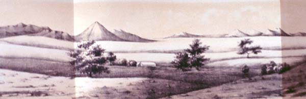

|
|  |
|
Rodolpho A. Philippi, Panorama de Río Frío
|
One of the reasons Humboldtian romantic naturalism attained such a pervasive influence in post-independence America was that it enlisted both the artist´s eye for the immanent harmony of natural forms and the scientist´s quest for 'objective' and quantifiable data, thus producing a 'physiological' image of nature that was at the same time empathic and detached. At the same time as it was being mastered by the apparatus of knowledge that surveyed and classified its component elements, nature overwhelmed the subject of the gaze as an aesthetic spectacle, and it was in this way, precisely, that it could be made to embody both the essence of nationality and the civilising, order-enforcing action of the state.
|